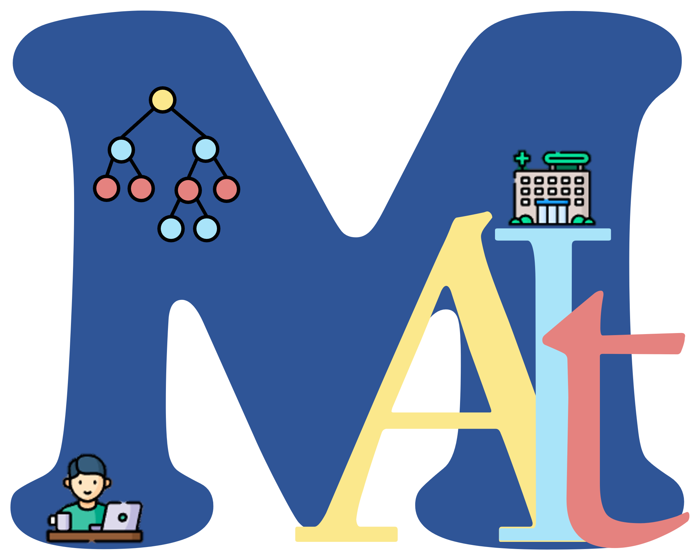
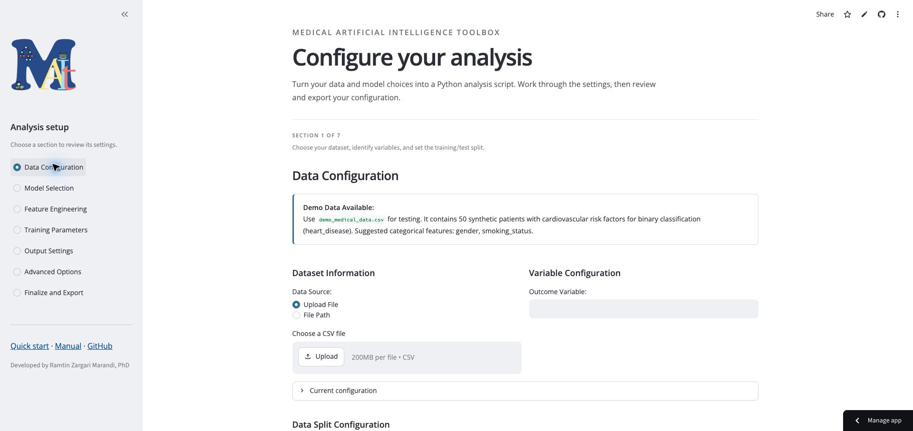

Start with your research data
Configure variables, data splits, and preprocessing for your project.

Medical Artificial Intelligence Toolbox
Python tools for research
Prepare tabular data, compare models, and explore their predictions with MAIT. Use the interactive configuration app to set up your analysis and export a Python script.
Configure in the browser. Export your script and run the analysis on your computer.

Configure variables, data splits, and preprocessing for your project.
Explore model training, cross-validation, and performance evaluation.
Use feature explanations, figures, and tables to explore model behaviour.